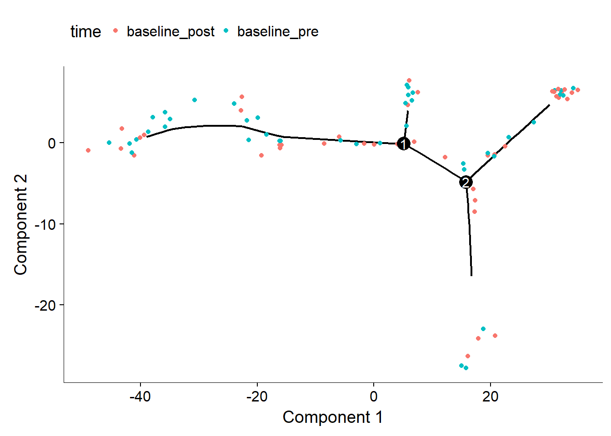

4 Pseudo-time trajectory prediction
4.1 Step 1-2: Set ordering genes and reduce demisionality
" Monocle looks for genes that vary in “interesting” (i.e. not just noisy) ways, and uses these to structure the data."
— Monocle Mannual
This is the feature selection step in the Monocle’s machine learning algorithm for this job, which has major impact of the shape of the trajectory to be constructed(Trapnell 2017).
diff_test_res <- differentialGeneTest(human[expressed.gene,],
fullModelFormulaStr = "~time")
ordering_genes <- row.names (subset(diff_test_res, qval < 0.01))
ordering_genes <- intersect(ordering_genes, expressed.gene)
human <- setOrderingFilter(human, ordering_genes)
human <- reduceDimension(human, max_components = 2,
method = 'DDRTree')
human <- orderCells(human)17985 of 22047 genes left. (The 22047 genes are the genes that express “interestingly” as described in Section 3.1).
4.2 Step 3: ordering the cells in pseudotime
plot_cell_trajectory(human, color_by = "time")Figure 4.1: Sample trajectory colored by real time points
plot_cell_trajectory(human, color_by = "Pseudotime")Figure 4.2: Same trajectory colored by Pseudotime
Monocle doesn’t know a priori which of the trajectory of the tree to call the “beginning”. So the Pseudotime is plotted reversly. It’s a little bit tricky to make it right. But in our case, it’s clear that the left is beginning and the right is end since the left points are pre and right points are post, as suggested in the previous figuer.
knitr::kable(
pData(human)[,c("person", "time", "Pseudotime")], booktabs = TRUE,
caption = 'A table of the Pseudotime generated'
)| person | time | Pseudotime | |
|---|---|---|---|
| sample.kidney_01_baseline_post | 01 | baseline_post | 16.343957 |
| sample.kidney_01_baseline_pre | 01 | baseline_pre | 18.759666 |
| sample.kidney_02_baseline_post | 02 | baseline_post | 15.905122 |
| sample.kidney_02_baseline_pre | 02 | baseline_pre | 23.558735 |
| sample.kidney_03_baseline_post | 03 | baseline_post | 15.546759 |
| sample.kidney_03_baseline_pre | 03 | baseline_pre | 23.977949 |
| sample.kidney_04_baseline_post | 04 | baseline_post | 3.471537 |
| sample.kidney_04_baseline_pre | 04 | baseline_pre | 37.794212 |
| sample.kidney_05_baseline_post | 05 | baseline_post | 19.294851 |
| sample.kidney_05_baseline_pre | 05 | baseline_pre | 37.268242 |
| sample.kidney_06_baseline_post | 06 | baseline_post | 19.417621 |
| sample.kidney_06_baseline_pre | 06 | baseline_pre | 36.971777 |
| sample.kidney_07_baseline_post | 07 | baseline_post | 0.000000 |
| sample.kidney_07_baseline_pre | 07 | baseline_pre | 36.049794 |
| sample.kidney_08_baseline_post | 08 | baseline_post | 19.006155 |
| sample.kidney_08_baseline_pre | 08 | baseline_pre | 20.959575 |
| sample.kidney_09_baseline_post | 09 | baseline_post | 2.493296 |
| sample.kidney_09_baseline_pre | 09 | baseline_pre | 36.291851 |
| sample.kidney_10_baseline_post | 10 | baseline_post | 3.972422 |
| sample.kidney_10_baseline_pre | 10 | baseline_pre | 37.515398 |
| sample.kidney_11_baseline_post | 11 | baseline_post | 14.915194 |
| sample.kidney_11_baseline_pre | 11 | baseline_pre | 26.426196 |
| sample.kidney_12_baseline_post | 12 | baseline_post | 15.076965 |
| sample.kidney_12_baseline_pre | 12 | baseline_pre | 37.998821 |
| sample.kidney_13_baseline_post | 13 | baseline_post | 4.481699 |
| sample.kidney_13_baseline_pre | 13 | baseline_pre | 26.022365 |
| sample.kidney_14_baseline_post | 14 | baseline_post | 15.254758 |
| sample.kidney_14_baseline_pre | 14 | baseline_pre | 37.207727 |
| sample.kidney_15_baseline_post | 15 | baseline_post | 13.139552 |
| sample.kidney_15_baseline_pre | 15 | baseline_pre | 37.565014 |
| sample.kidney_16_baseline_post | 16 | baseline_post | 23.509750 |
| sample.kidney_16_baseline_pre | 16 | baseline_pre | 38.203048 |
| sample.kidney_17_baseline_post | 17 | baseline_post | 4.411050 |
| sample.kidney_17_baseline_pre | 17 | baseline_pre | 37.731035 |
| sample.kidney_18_baseline_post | 18 | baseline_post | 14.734395 |
| sample.kidney_18_baseline_pre | 18 | baseline_pre | 34.592928 |
| sample.kidney_19_baseline_post | 19 | baseline_post | 3.049479 |
| sample.kidney_19_baseline_pre | 19 | baseline_pre | 37.095411 |
| sample.kidney_20_baseline_post | 20 | baseline_post | 16.851456 |
| sample.kidney_20_baseline_pre | 20 | baseline_pre | 31.596650 |
| sample.kidney_21_baseline_post | 21 | baseline_post | 3.494093 |
| sample.kidney_21_baseline_pre | 21 | baseline_pre | 36.670486 |
| sample.kidney_22_baseline_post | 22 | baseline_post | 3.542999 |
| sample.kidney_22_baseline_pre | 22 | baseline_pre | 28.310753 |
| sample.kidney_23_baseline_post | 23 | baseline_post | 3.524408 |
| sample.kidney_23_baseline_pre | 23 | baseline_pre | 37.322141 |
| sample.kidney_24_baseline_post | 24 | baseline_post | 11.445690 |
| sample.kidney_24_baseline_pre | 24 | baseline_pre | 28.211771 |
| sample.kidney_25_baseline_post | 25 | baseline_post | 11.453034 |
| sample.kidney_25_baseline_pre | 25 | baseline_pre | 24.934383 |
| sample.kidney_26_baseline_post | 26 | baseline_post | 28.857246 |
| sample.kidney_26_baseline_pre | 26 | baseline_pre | 27.860759 |
| sample.kidney_27_baseline_post | 27 | baseline_post | 14.729848 |
| sample.kidney_27_baseline_pre | 27 | baseline_pre | 35.940841 |
| sample.kidney_28_baseline_post | 28 | baseline_post | 14.675554 |
| sample.kidney_28_baseline_pre | 28 | baseline_pre | 28.178635 |
| sample.kidney_29_baseline_post | 29 | baseline_post | 28.788652 |
| sample.kidney_30_baseline_post | 30 | baseline_post | 18.839448 |
| sample.kidney_30_baseline_pre | 30 | baseline_pre | 24.448409 |
| sample.kidney_31_baseline_post | 31 | baseline_post | 4.439941 |
| sample.kidney_31_baseline_pre | 31 | baseline_pre | 35.922339 |
| sample.kidney_32_baseline_post | 32 | baseline_post | 4.611549 |
| sample.kidney_32_baseline_pre | 32 | baseline_pre | 30.455091 |
| sample.kidney_33_baseline_post | 33 | baseline_post | 15.234127 |
| sample.kidney_33_baseline_pre | 33 | baseline_pre | 25.032899 |
| sample.kidney_34_baseline_post | 34 | baseline_post | 4.359224 |
| sample.kidney_34_baseline_pre | 34 | baseline_pre | 30.551365 |
| sample.kidney_35_baseline_post | 35 | baseline_post | 6.274882 |
| sample.kidney_35_baseline_pre | 35 | baseline_pre | 30.838598 |
| sample.kidney_36_baseline_post | 36 | baseline_post | 4.345997 |
| sample.kidney_36_baseline_pre | 36 | baseline_pre | 36.929690 |
| sample.kidney_37_baseline_post | 37 | baseline_post | 20.928901 |
| sample.kidney_37_baseline_pre | 37 | baseline_pre | 35.107001 |
| sample.kidney_38_baseline_post | 38 | baseline_post | 14.790778 |
| sample.kidney_38_baseline_pre | 38 | baseline_pre | 33.732354 |
| sample.kidney_39_baseline_post | 39 | baseline_post | 17.537571 |
| sample.kidney_39_baseline_pre | 39 | baseline_pre | 30.476172 |
| sample.kidney_40_baseline_post | 40 | baseline_post | 3.428423 |
| sample.kidney_40_baseline_pre | 40 | baseline_pre | 28.065158 |
| sample.kidney_41_baseline_post | 41 | baseline_post | 10.472033 |
| sample.kidney_41_baseline_pre | 41 | baseline_pre | 27.043803 |
| sample.kidney_42_baseline_post | 42 | baseline_post | 15.210156 |
| sample.kidney_42_baseline_pre | 42 | baseline_pre | 24.953453 |
4.3 Two-dimensional case
plot_cell_trajectory(human, color_by = "time")
The sample rank and corresponding pseudo-time:
## 07 21 22 09 17 04 26 10 35 23 34 19 15 31 28 03 29 32 01 02 13 20 40 36 16 18 38 11 05 24 25 14 27 41 30 06 42 12 08 39 33 37## 0 5.51 6.25 7.56 9.01 9.77 26.39 26.4 30.68 33.46 33.55 33.72 40.93 43.48 45.92 46.7 47.11 47.85 48.75 48.9 48.93 49.58 53.56 53.96 56.18 61.76 64.31 65.68 67.09 72.56 73.62 75.71 86.21 86.42 86.43 86.7 87.21 87.43 87.89 88.13 88.93 89.98Or reversily:
## 37 33 39 08 12 42 06 30 41 27 14 25 24 05 11 38 18 16 36 40 20 13 02 01 32 29 03 28 31 15 19 34 23 35 10 26 04 17 09 22 21 07## 0 1.05 1.85 2.09 2.55 2.77 3.28 3.55 3.56 3.77 14.27 16.36 17.42 22.89 24.31 25.67 28.22 33.8 36.02 36.42 40.4 41.05 41.08 41.23 42.13 42.87 43.28 44.06 46.5 49.05 56.26 56.43 56.53 59.3 63.58 63.59 80.21 80.97 82.42 83.73 84.47 89.98References
Trapnell, Cole. 2017. Monocle: Clustering, Differential Expression, and Trajectory Analysis for Single- Cell Rna-Seq. https://bioconductor.org/packages/release/bioc/html/monocle.html.